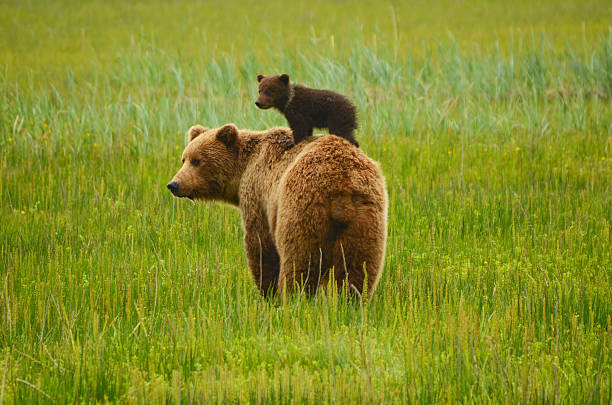

The brown bear (Ursus arctos) is a large bear native to Eurasia and North America. Of the land carnivorans, it is rivaled in size only by its closest relative, the polar bear, which is much less variable in size and slightly bigger on average. The brown bear is a sexually dimorphic species, as adult males are larger and more compactly built than females. The fur ranges in color from cream to reddish to dark brown. It has evolved large hump muscles, unique among bears, and paws up to 21 cm (8.3 in) wide and 36 cm (14 in) long, to effectively dig through dirt. Its teeth are similar to those of other bears and reflect its dietary plasticity.
Throughout the brown bear's range, it inhabits mainly forested habitats in elevations of up to 5,000 m (16,000 ft). It is omnivorous, and consumes a variety of plant and animal species. Contrary to popular belief, the brown bear derives 90% of its diet from plants. When hunting, it will target animals as small as insects and rodents to those as large as moose or muskoxen. In parts of coastal Alaska, brown bears predominantly feed on spawning salmon that come near shore to lay their eggs. For most of the year, it is a usually solitary animal that associates only when mating or raising cubs. Females give birth to an average of one to three cubs that remain with their mother for 1.5 to 4.5 years. It is a long-lived animal, with an average lifespan of 25 years in the wild. Relative to its body size, the brown bear has an exceptionally large brain. This large brain allows for high cognitive abilities, such as tool use. Attacks on humans, though widely reported, are generally rare.

Brown bear and a brown bear cub.